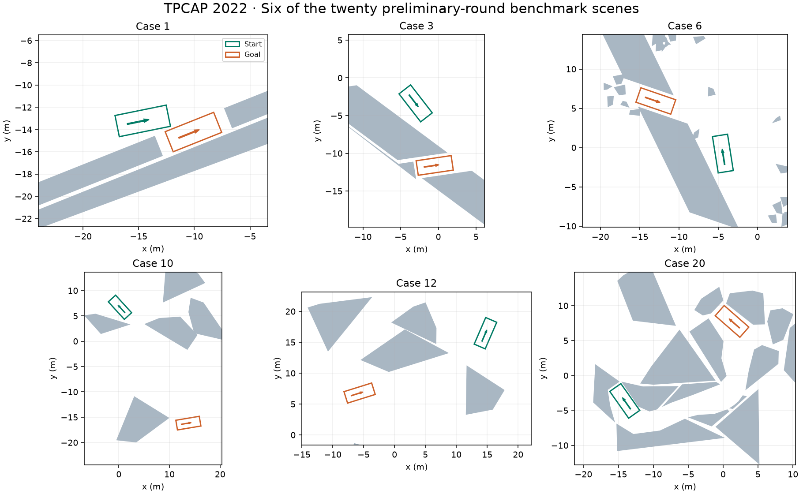

Parking fundamentals
Parallel, perpendicular, and oblique parking with irregularly placed obstacles.
Trajectory Planning Competition for Automated Parking
An open research challenge focused on one question: how well can an algorithm plan a feasible, efficient parking maneuver in a difficult environment?
Parking is more than drawing a smooth line. A vehicle may need to reverse, steer while stationary, squeeze through a narrow opening, or choose between very different routes around obstacles.
TPCAP was organized as part of the 2022 IEEE International Conference on Intelligent Transportation Systems to study these planning challenges directly. Perception, localization, communication, and the construction of a physical vehicle platform were outside the contest.
Teams submitted trajectories, not source code. This kept participation open to different programming languages and protected participants’ implementation details. A common evaluation system assessed feasibility, tracking behavior, parking duration, and smoothness.

Parallel, perpendicular, and oblique parking with irregularly placed obstacles.
Clutter tests whether collision checking and optimization scale beyond the obstacles that matter.
Tight slots expose the trade-off between fine discretization and computation cost.
Different homotopy classes and tiny passages separate a feasible route from an efficient one.
Sharp obstacles and coordinates far from the origin test geometric and numerical robustness.
Nonconvex obstacles challenge methods that assume every polygon is convex.
Direction changes, route quality, and redundant collinear vertices appear in one scenario.
A constrained mine-like environment leaves little room between feasibility and a good solution.
Twenty published cases. Each team could submit one solution batch per day. Scores were reported the next day; the public leaderboard showed the leading 20 teams using each team’s best score.
Teams with feasible solutions to all 20 cases qualified for the final.
Eight new cases were released to 23 qualifying teams. Each team had one submission opportunity within the final window. All 23 teams submitted; the results determined the five leading winners.
A subsequent webinar shared approaches and experiences from participating teams.
time, x, y, headingOne four-column CSV per case; position refers to the vehicle reference point, normally the rear-axle midpoint.Validate numeric content, four-column structure, increasing timestamps, sampling density, and agreement with the required start and goal poses.
A nonlinear model predictive controller tracks each legal trajectory under a single-track kinematic model. Differences between submitted and tracked motion reveal kinematic infeasibility.
Closed-loop collisions incur penalties related to their duration. Collisions already present in the submitted trajectory incur an additional substantial penalty.
For feasible solutions, weighted parking duration and smoothness contribute to the score. Lower is better; the team score is summed over all cases.
Completing every case matters. Invalid or missing solutions receive severe penalties, so solving 19 cases exceptionally well does not outrank a team with feasible solutions to all 20.
This is a summary of the published evaluation principles. It is not a replacement scoring server or a new competition ruleset.
The competition report identifies the following institutions for the five leading teams, in final ranking order.
Trajectory-only submissions can support meaningful comparison without requiring source-code disclosure. Common closed-loop tracking helps reveal infeasible motion.
The all-cases requirement encouraged robust planners. It also made a carefully balanced distribution of benchmark difficulty essential.
Unexpected complex-valued submissions exposed a prescreening gap. A public evaluator must handle malformed and unusual numeric data explicitly.
When scoring changed, earlier submissions were rescored. Live score feedback helped teams; publishing leading trajectories mid-contest could reveal route choices and undermine fairness.
Teams used sampling, search, and numerical optimization, often together. Clear explanations of kinematic feasibility remained important even for qualifying teams.
The report proposes richer vehicle dynamics, stronger safeguards against shared or duplicate submissions, rough or three-dimensional environments, and cooperative or multi-body planning.
Download the released preliminary cases.
MATLABLoad and draw all 20 benchmark layouts.
PYTHONInspect the same data with Python and Matplotlib.
PUBLICATIONBenchmarks, achievements, lessons, and future perspectives.
The MATLAB and Python demos visualize scenario data; they do not implement the competition scoring controller.
Please cite the competition report when using the benchmark collection:
Bai Li, Lili Fan, Yakun Ouyang, Shiqi Tang, Xiao Wang, Dongpu Cao, and Fei-Yue Wang. “Online Competition of Trajectory Planning for Automated Parking: Benchmarks, Achievements, Learned Lessons, and Future Perspectives.” IEEE Transactions on Intelligent Vehicles, 8(1), 16–21, 2023. DOI: 10.1109/TIV.2022.3228963.
@article{li2023tpcap,
author = {Li, Bai and Fan, Lili and Ouyang, Yakun and
Tang, Shiqi and Wang, Xiao and Cao, Dongpu and Wang, Fei-Yue},
title = {Online Competition of Trajectory Planning for Automated Parking:
Benchmarks, Achievements, Learned Lessons, and Future Perspectives},
journal = {IEEE Transactions on Intelligent Vehicles},
volume = {8}, number = {1}, pages = {16--21}, year = {2023},
doi = {10.1109/TIV.2022.3228963}
}The report acknowledges Li Li and Shen Li of Tsinghua University for assistance; the Autoware Foundation and Nagoya University for prize sponsorship; and Yanfeng Ma, Yuxia Sun, Gordon Pan, Yi Liu, Yiqun Dong, and Yuqing Guo for technical support.